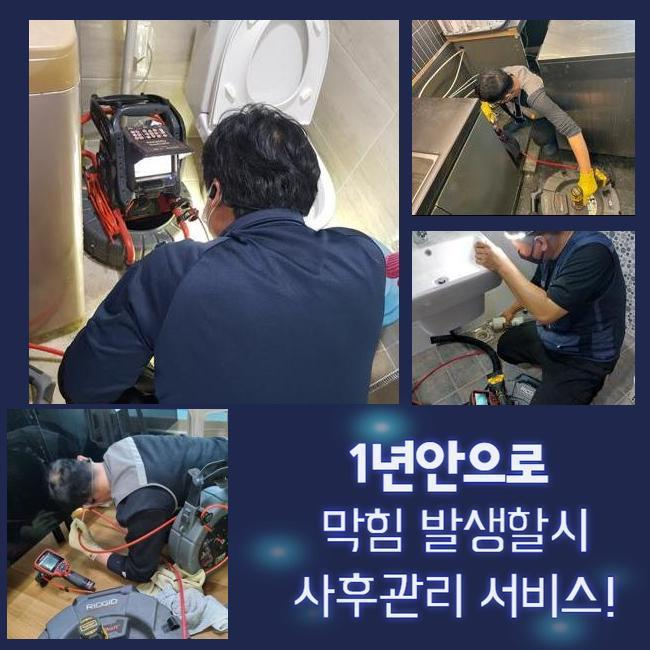
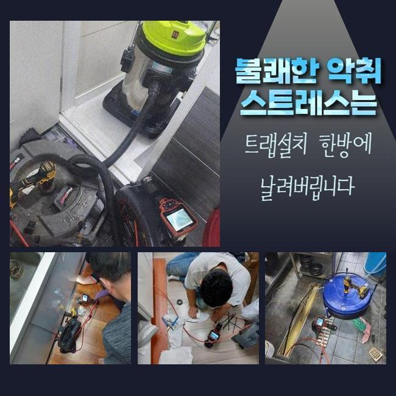
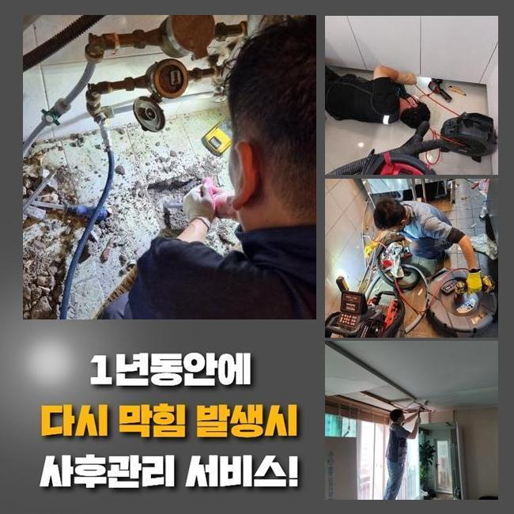
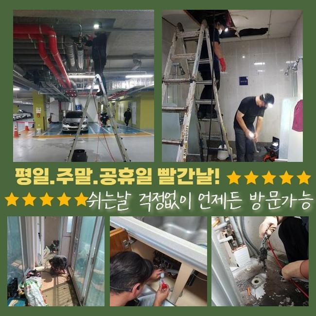
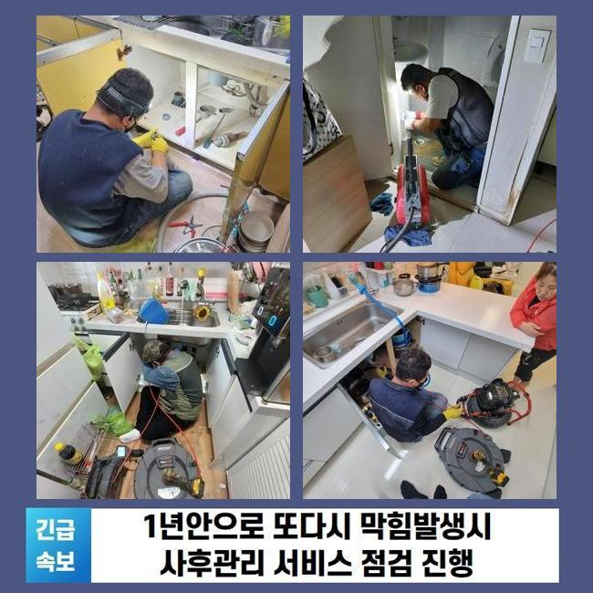
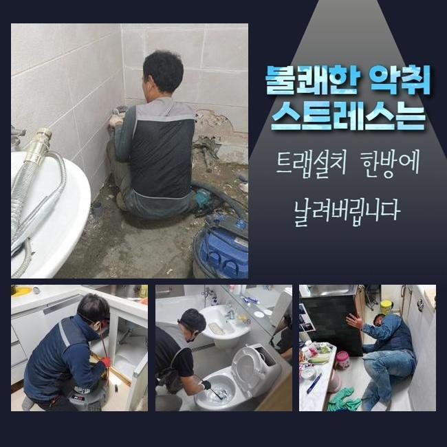
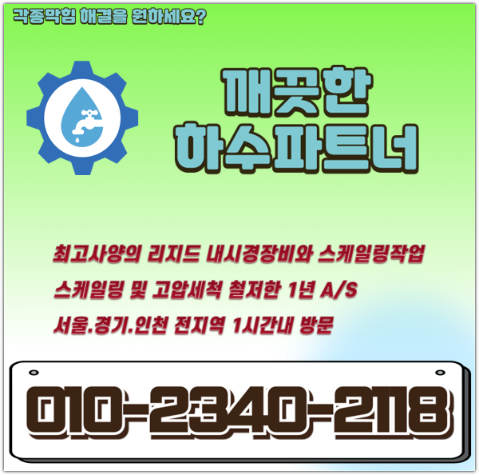

🏠 강서구 염창동화장실뚫음 오곡동 하수구청소 부속수리
용인 하수구막힘 전문 시공 후기

📋 작업 개요
- 위치: 용인
- 서비스 유형: 하수구막힘, 배관막힘, 누수수리, 역류해결, 뚫는업체, 배관청소, 고압세척, 설비공사, 악취차단
- 작업 일시: 2025. 3. 29. 0:14
- 업체명: 하수구수사대 (010-5615-2118)
🔍 문제 상황
강서구 염창동화장실뚫음 오곡동 하수구청소 부속수리
하수관이 차단되는 사태는 한두번씩은 경험해보셨을거라고 생각하고 있어요
특히 욕실 및 개수대에서 생기는 관로막힘은 평상시 생활에 고충을 유발하게 되겠죠
그럼 주방시설에선 왜 막힘이 발발하는건지 생각해봐야 하겠습니다
주방시설은 요리할때 발생되는 음식물의 잔재나 비닐조각들이 하수관에 적층되어서 물막힘이 생긴답니다
그렇게 되면 배수문제를 비롯하여 구린내가 올라오며 시간의 흐름에 따라서 하수관이 노화되어서 더욱 커다란 트러블을 나타날수 있겠죠
통상적으로 해당되는 막힘이 일어난 경우 배관을 도구로 분해해서 정리하려고 하시죠
다만 해당 대책은 잠시간의 물길만 만들뿐 원적적인 요소를 처리하지않으면 동일한 정황이 재발하기 쉽습니다
이물질이 배수관의 하부쪽에 자리잡았다면 일반인이 쉽게 목도하거나 정리하기 힘들기 때문이죠
그리고 서툴게 수리를 한다면 도리어 파이프에 부담을 주게되어 찌꺼기들을 올바르게 정리해낼수가 없는거랍니다
그렇기 때문에 하수관이 막히게 되면 전문가를 찾아서 분명하고 깔끔하게 정리하는게 바람직합니다

🔎 원인 분석
💡 전문가 진단: 정밀 진단 장비를 사용하여 슬러지의 고착 여부를 판명하고 타격/세척 작업을 실시했습니다.
그저께 저희들은 배관문제 이슈로 시공문의를 받았어요
의뢰자께서는 욕실에서 생긴 배수관정체로 역류문제와 악취까지 생겨서 일상에 곤란함을 감당하는 상황이었죠
구린내가 진동하는바람에 일상을 영위하기가 어려웠고 역류현상까지 생겨 집안이 오손되는 사태에 이르게 되었다 하셨어요
손님분의 힘겨움을 조금이나마 빨리 처치하려 즉각적으로 문제의 장소로 출동하였습니다
내방한뒤에 의뢰인과 이야기를 나누고 사태를 상세하게 파악하였어요
고객님은 욕실에서 물빠짐이 되지않고 역류증세까지 간헐적으로 나타나 공간이 오염되어버린 상황이라면서 빠른 해결을 원하셨죠
이주일전 쯤부터 이런 사태가 벌어지게 되었는데 내버려뒀다가 더 악화되었다고 하십니다
그러한 상황에서는 단조롭게 관로뚫음을 이행하여서는 본질적인 해결에 다가서기 힘들죠
침전물이 관로에 강하게 달라붙어있는 거라 안쪽의 현황을 세밀하게 검사한다음에 합리적인 계획을 세워 공사해야 하죠
깊숙한 위치에서 생긴 문제들은 직접적으로 파악하기 어려울 때가 많답니다
그렇기에 저흰 내시경기기를 사용해 배관안쪽의 상황을 면밀히 조사하는 공정에 들어갔어요
내시경기기로 조사해보았더니 파이프 내부엔 장시간 적체된 석회성분들과 기름슬러지가 엉겨붙어 구멍을 빼곡히 가로막는 상황이었어요

🔧 작업 과정
또 잔재들이 견고하게 자리를 잡아서 간단히 세정만해서는 정비가 어려웠답니다
진단을 끝낸다음에 샤프트기기를 통해서 파이프에 강력하게 붙은 슬러지를 소제하는 공정을 속행하였습니다
이 분쇄기기는 배관속에 누증된 슬러지 등을 재빠르게 와해시키고 소멸시킬수 있기 때문에 내부 침전물들이 굳었을때 상당히 쓸모가있죠
플렉스샤프트는 강력한 회전으로 이물들을 자잘하게 쪼개서 하수관에 부착된 견고한 석회물질이나 기름슬러지를 적절하게 소멸시킬수 있어요
다만 너무 강력한 힘으로 공사를 진행한다면 관이 망가질수도 있기에 풍부한 경험과 신중한 접근이 중요한 것이랍니다
금번에 찾아간 현장은 또한 침전물들이 배관에 강력하게 체류하고있어 몇번의 공정으로는 정비를 완수하기 힘겨웠죠
배관 군데군데 쌓여있는 소석회물질은 한층더 해당 형편을 악화하게 만들었어요
그러한 이유로 저희팀에선 고압세척장비와 분쇄기기를 동반하여 사용하며 잔재들을 소제하고 깨끗이 제거하는 작업을 진행하였던 거죠
강력한 압력으로 찌꺼기를 없앨때는 그것들이 근방으로 흩어지지 못하도록 신경써야 합니다
오물들이 흩어져 근방이 심각하게 오손된다면 정리하기 힘들어질수도 있기 때문에 각별한 주의가 요망되죠
그래서 세척중 이러한 상황을 막기 위하여 보양작업을 진행했고 의뢰인분께서 불편하지 않게 세심하게 과정을 속행했어요
이물을 전부 처리한뒤 거듭하여 내시경설비를 이용해 파이프를 검사하였죠
안쪽에 머물고있는 석회물질이나 이차적인 고장여부를 검사하는건 굉장히 중요하다 말씀드릴수 있죠
본 현장에선 수차례 관 내측을 조사하고 부가적으로 발현가능한 트러블을 예방했어요
이물들이 전면적으로 정리된걸 파악한뒤에 폐수를 내려보내면서 배수성능이 돌아왔는지 검사해 보았답니다
온전히 소멸되는 모습을 수차례 시험으로 확인하였어요
배수구로 하수가 원활하게 사라지는걸 고객분도 인지하셨고 분명하게 수리되었다는걸 확실시할수 있었죠
세척이 지체되어 찌꺼기가 더더욱 늘어나게 된다면 아래층으로 배관문제가 파급될수 있답니다
그렇게 된다면 정리해야할 것이 많아질 가능성이 커지기에 미리미리 진단을 받으시는 것이 마땅합니다


✅ 작업 완료
그리고 하수구막힘은 평상시의 생활에 고충을 발생시키므로 가급적이면 재빠르게 고치시는게 좋답니다
하수관 정체가 증대된다면 오취는 기본이고 누수까지 일어날수 있다는것도 인지하고 있어야 하겠죠
공사전에는 필히 합당한 수리기기를 소지해두어야 하겠습니다
안 그러면 진단을 적절히 하지못하는 상황이 발현되어 시간적 손실까지 야기할수 있습니다
급작스럽게 일어난 막힘으로 수리가 필요하시다면 저희쪽으로 편하게 문의해 주십시오




⚠️ 베란다 누수 및 방수 관리 방법
- ✅ 비가 많이 올 때 창틀 주변이나 아래층 천장에 얼룩이 생기는지 정기적으로 확인해 보세요.
- ✅ 우수관 주변 실리콘 마감이 들뜨거나 깨진 틈새가 있는지 손상 여부를 수시로 체크하세요.
- ✅ 베란다 바닥 타일의 줄눈(메지)이 소실되면 그 틈으로 물이 침투하여 누수가 유발됩니다.
- ✅ 누수 의심 증상 발견 시 방치하면 아래층 손실이 커지므로 즉시 전문가의 진단을 받으십시오.
💡 핵심 정리
- 확실한 장비 작업(내시경 점검 및 샤프트 스케일링)으로 원인을 뿌리 뽑습니다.
- 작업 후 1년 이내에 동일한 부위 재발 시 100% 무상 A/S 서비스를 보장합니다.
- 서울 · 경기 · 인천 전 지역에 24시간 언제든 긴급 출동할 수 있도록 항시 대기 중입니다.
❓ 자주 묻는 질문 (FAQ)
🚨 용인 하수구막힘 문제로 고민이신가요?
정확한 원인 진단과 확실한 시공으로 재발 없는 해결을 약속드립니다.
24시간 긴급 출동 | 서울 · 경기 · 인천 전지역 | 1년 내 재발 시 무상 A/S